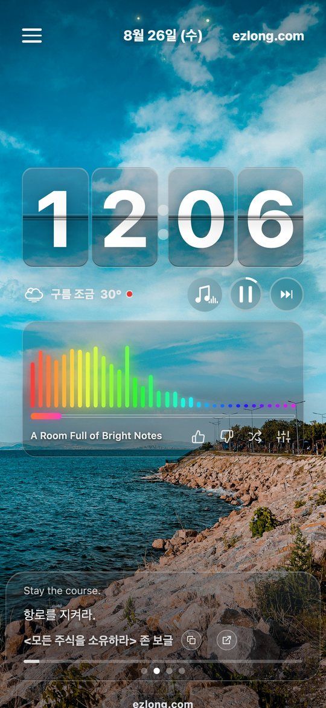
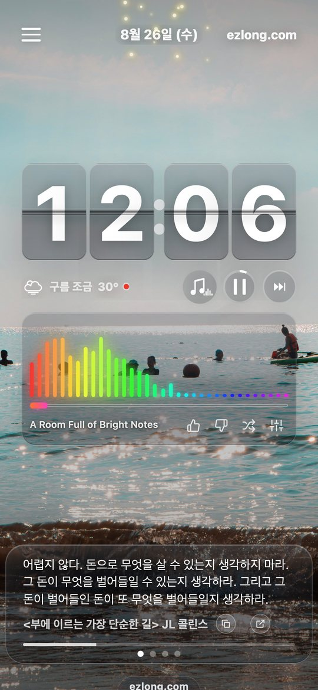
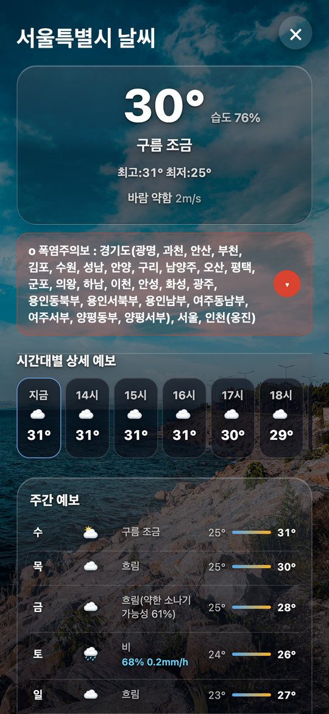
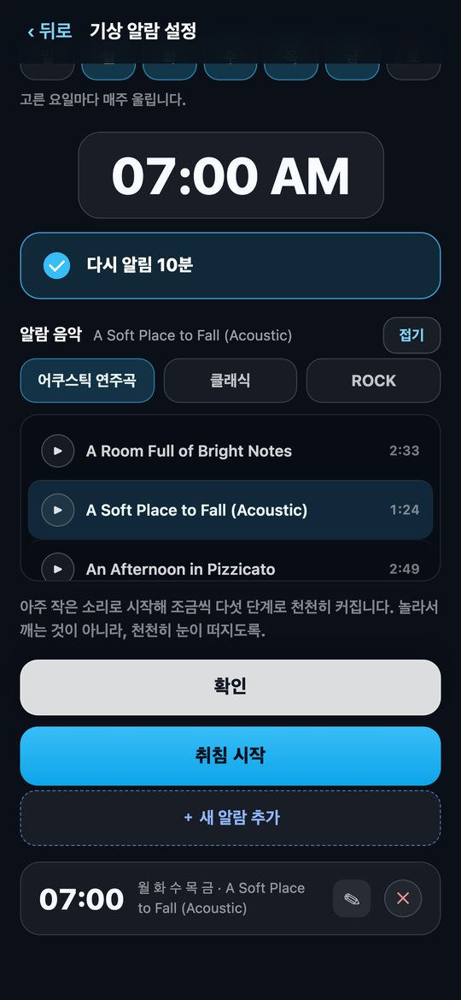

아는 것은 쉽고,
지키는 것은 어렵습니다.
장기투자도 분할매수도 우리는 이미 압니다. 어려운 것은 시장이 흔들리는 날에 그 말을 그대로 지키는 일입니다. Long Time, Easy Life는 머리맡에 세워 두는 플립시계이면서, 밑줄 쳐 둔 문장을 하루 종일 1분에 하나씩 다시 보여 주는 앱입니다.
무료입니다. 회원가입도, 로그인도 없습니다.



문장
하루에 한 문장씩, 계속 다시.
머리로 아는 것과 손이 그렇게 움직이는 것은 다른 일입니다. 한 번 읽고 덮어 둔 문장은 정작 필요한 날에 떠오르지 않습니다. 그래서 눈에 계속 걸리는 자리에 두었습니다 — 시계 바로 아래.
단기적으로 시장은 투표기계이지만, 장기적으로는 저울이다. 벤저민 그레이엄 · 현명한 투자자
현명한 투자자는 강세장을 두려워한다. 주식을 더 비싸게 사야 하기 때문이다. 반대로 약세장은 반겨야 한다. 주식이 다시 세일에 들어가기 때문이다.벤저민 그레이엄 · 현명한 투자자
투자란 남의 게임에서 남을 이기는 것이 아니다. 나의 게임에서 나 자신을 통제하는 것이다.벤저민 그레이엄 · 현명한 투자자
투자 성공의 승리 공식은 인덱스 펀드를 통해 전체 주식 시장을 보유하고, 아무것도 하지 않는 것이다. 그냥 코스를 유지하라.존 보글 · 상식이 이기는 투자
투자 고전만 있는 것이 아닙니다. 실제로 읽고 밑줄 친 책 315권에서 고른 문장 1,307개가 들어 있습니다 — 경제와 자기계발, 문학, 에세이, 시, 과학, 인문과 동양 고전까지. 마음가짐·인내·변동성·복리·행동 같은 결로 갈라 두어서, 오늘 필요한 쪽만 골라 볼 수도 있습니다. 마음에 든 문장에서는 그 책으로 바로 갈 수 있습니다.
시계와 날씨
눈이 편한 큰 숫자, 그리고 딱 필요한 만큼의 날씨.
옛날 플립시계처럼 숫자가 넘어갑니다. 침대에서 안경 없이도 읽히는 크기로 잡았고, 밤에는 저절로 어두워집니다. 배경 사진은 시간대와 계절, 그리고 지금 창밖 날씨에 맞춰 바뀝니다.
- 현재 기온과 하늘 상태를 시계 바로 아래 한 줄로
- 누르면 시간대별·주간 예보와 기상 특보까지 한 화면에
- 비가 오는 날은 화면에도 비가 내립니다
- 가로로 눕히면 그대로 탁상시계가 됩니다

기상과 수면
놀라서 깨는 것이 아니라, 천천히 눈이 떠지도록.
미국 장이 열리는 밤이나 새벽에 일어나야 하는 날이 있습니다. 그런 날 요란한 벨소리로 깨면 하루가 통째로 흔들립니다. 알람은 아주 작은 소리로 시작해 다섯 단계에 걸쳐 천천히 커집니다.
- 알람 음악을 어쿠스틱·클래식·록 중에서 고릅니다
- 요일별로 다르게, 여러 개를 함께 걸어 둘 수 있습니다
- 취침 시작을 누르면 화면이 아주 어둡게 유지되다가 아침에 깨워 줍니다
- 밤에는 문장도 잠에 관한 것으로 바뀝니다
그 밖에
켜 둔 채로 두라고 만든 앱입니다.
배터리와 눈, 두 가지를 계속 신경 쓰며 만들었습니다.
광고 없는 배경 음악
차분한 연주곡부터 시티팝·록까지 609곡. 재생 중간에 광고가 끼어들지 않습니다. 좋아요를 누른 곡은 조금 더 먼저 돌아옵니다.
밤에는 알아서 어둡게
해가 지면 화면이 저절로 가라앉습니다. 머리맡에 두고 자도 눈이 부시지 않습니다.
애플워치
손목에서도 같은 시계와 같은 문장을 봅니다. 배경 사진도 함께 넘어갑니다.
설치 없이 웹으로
브라우저에서 주소만 열면 바로 시작됩니다. 오래된 태블릿을 탁상시계로 되살리기 좋습니다.
계절과 날씨를 읽는 배경
사진 2,891장이 시간대·계절·날씨에 맞춰 바뀝니다. 한여름에는 시원한 사진이 더 자주 나옵니다.
6개 언어
한국어·영어·일본어·중국어·스페인어·포르투갈어로 씁니다.
개인정보
계정이 없습니다.
회원가입도 로그인도 없습니다. 날씨를 받아 오기 위해 지역 정보를 쓰지만 그 이상은 가져가지 않고, 어느 문장을 봤는지·어느 곡을 들었는지는 기기 안에만 남습니다. 웹판은 브라우저를 닫아도 그 기록이 그 기기에 그대로 있습니다.
같이 만든 앱
Skyblue Note
ChatGPT와 클로드가 준 답을 어디에 붙이면 별표와 우물 정이 따라옵니다. Skyblue Note는 그것을 한 번에 걷어내고, 줄이 어긋난 표까지 되살리는 메모장입니다.
- 표는 엑셀·구글 시트에 그대로 붙는 형식으로 복사됩니다
- 아이폰·아이패드·맥·안드로이드·웹이 실시간으로 같이 움직입니다
- 바꾸기 규칙을 직접 만들어 넣고 뺄 수 있습니다
만든 곳
EZLONG
미국 주식과 장기 투자를 다루는 도구와 글을 만듭니다. Long Time, Easy Life는 그 과정에서 스스로에게 가장 필요했던 것 — 흔들리는 날에 다시 읽을 문장 — 을 앱으로 옮긴 것입니다.